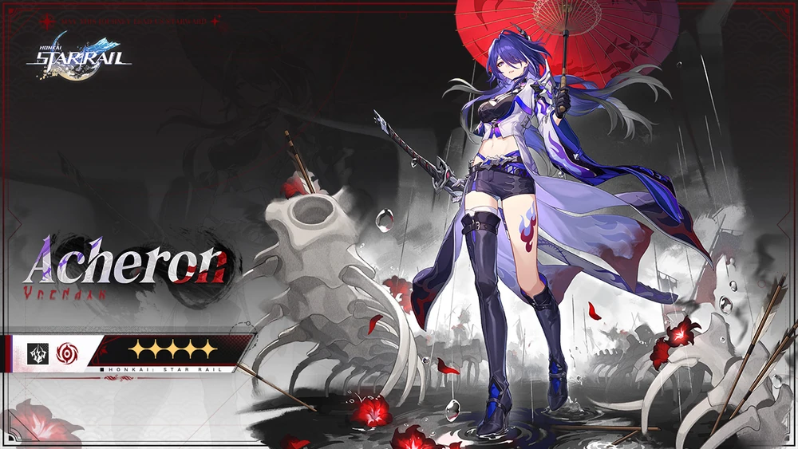
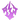

Acheron 
Acheron
Información general
Rareza
Vía Nihilidad
Elemento Rayo
"Los viajeros solitarios en el cosmos son impulsados por dos deseos: recorrer los rastros del pasado y forjar su propio camino. Pero bajo su escrutinio... la mayoría termina siguiendo el primero."
Acheron, cuyo nombre verdadero es Raiden Bosenmori Mei es un personaje jugable en Honkai: Star Rail.
Una vagabunda que se hace llamar "Vigilante de la Galaxia" de la que nadie sabe su verdadero nombre. Deambula sola por el cosmos, llevando consigo una larga espada.
Aunque indiferente y taciturna, su espada es tan súbita y violenta como un relámpago. Sin embargo, siempre lucha con su espada envainada.
Características
Acheron es una mujer alta de piel pálida, cabello largo de color violeta oscuro que llega hasta los muslos con un flequillo que cubre su ojo izquierdo y enmarca su rostro, ojos violetas brillantes con reflejos rosados y pupilas en forma de diamante.
El diseño de su atuendo tiene motivos japoneses, que consiste en un top corto negro con escote alto y recortes intrincados. Los recortes forman una V invertida en su pecho. Adjunta al escote alto hay una gargantilla. Lleva una chaqueta blanca y morada con una manga larga furisode que recuerda a un kimono. La chaqueta tiene intrincados diseños en negro y morado. También usa pantalones cortos negros y morados ajustados de cintura alta, así como botas negras. La bota izquierda llega hasta el muslo mientras que la bota derecha llega justo debajo de la rodilla. También tiene un tatuaje de una llama roja y violeta en su muslo izquierdo. Lleva un guante negro en su mano izquierda mientras que su mano derecha está cubierta por un guante sin dedos con protectores metálicos que cubren sus dedos. Un cinturón plateado con una hebilla detallada envuelve su cintura. Tiene varios accesorios que son de naturaleza quitinosa, incluida una hombrera, un cinturón y una correa de color púrpura a lo largo de su columna vertebral, así como una cadena alrededor de su muñeca izquierda y una gran espada que recuerda a un ōdachi.
Videos Relativos
-
Video promocional de Acheron: "Tu color" | Honkai: Star Rail
-
Corto animado de Honkai: Star Rail - Rondó a través de innumerables kalpas